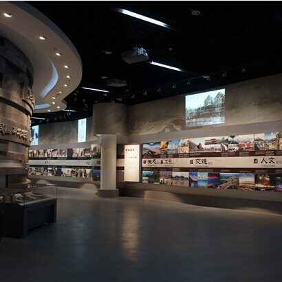
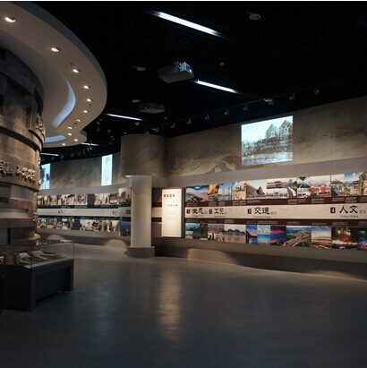

- 景点介绍
- 参观须知
- 交通攻略
辛亥革命博物馆是湖北省武汉市政府为纪念辛亥革命武昌首义100周年而兴建的一座专题博物馆， 总建筑面积22142㎡，位于武汉市武昌区阅马场首义广场南侧，北临彭刘杨路，南抵张之洞路， 东邻楚善街，西靠体育街，是首义文化区的核心建筑，与武昌起义军政府旧址（红楼）、孙中山铜像、 黄兴拜将台纪念碑、烈士祠牌坊等同处一条轴线。
 

- 一、开放时间：每周二至周日9:00——17:00。逢周一闭馆（法定节假日和特殊情况除外）。
- 二、观众在广场领票亭凭个人有效证件免费领取参观券，经安检入馆参观，领票时间为开放日的9:00——16:00，一人一票，当天有效。16:10停止领票，16:10停止入馆。
- 三、本馆基本陈列《共和之基——辛亥革命历史陈列》免费讲解时段为：开放日当天10:30、14:30，观众集合点：负一楼序厅。
- 四、衣冠不整者、醉酒者及精神性疾病患者谢绝入馆。严禁携带易燃易爆、管制械具等法定危险品入馆。请勿携带宠物、大件物品入馆参观。
- 五、学龄前儿童、高龄参观者、行动不便者，须由完全行为能力人陪同方可入馆参观。行动不便者凭票凭证（残疾人证、老年证）可从本馆侧门无障碍通道入馆参观。
- 六、请遵守参观温馨提示标识，爱护文物展品、展览设施和博物馆公共服务设施，文明参观。如有损坏，须照价赔偿或承担相应的法律责任。
- 七、馆内每天限量提供展馆简介和相关信息资料，观众可免费领取。非免费时段的讲解需求、多语种自助式语音导览器租用为收费服务项目，如有需要请与本馆服务台联系。
- 八、团体预约电话：027——88051911 027——88071911
- 辛亥革命博物馆地址：湖北省武汉市武昌区彭刘杨路258号
-
公交路线：
乘电车1路、4路、7路
10、61、401、402、411、413、503、522、554、596、701、703、710、728、797、804、806等公交车至阅马场站
因城市公交线路时有变化，参观本馆上车前敬请关注路牌。
-
城市轨道交通：
乘地铁4号线至首义路站E出口。